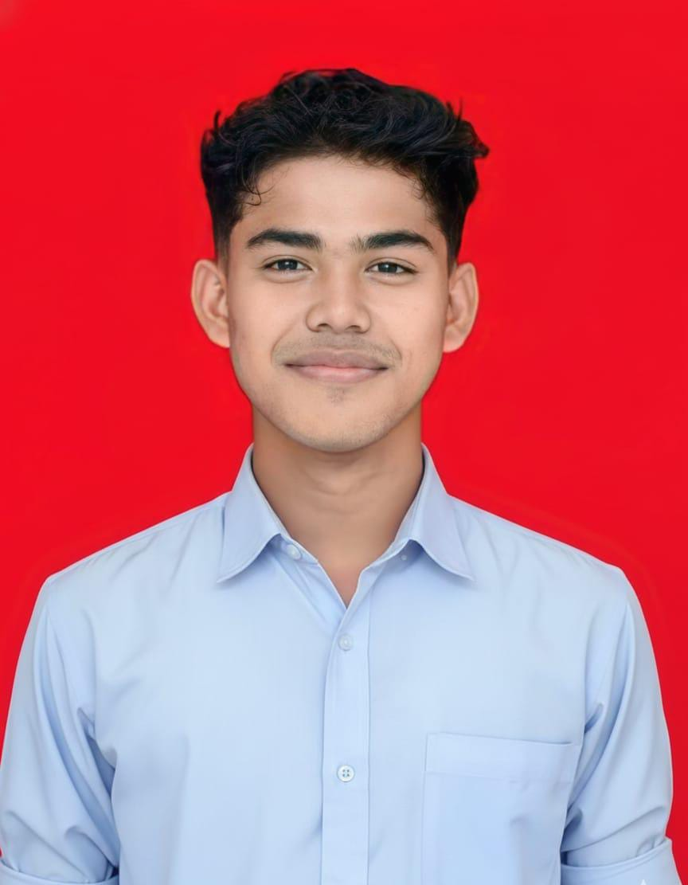

Foto Profil

📝 Tentang Saya
Haii! Perkenalkan, saya Raihan Azhar Dalimunthe biasa dipanggil dengan nama Hanns, lahir di Rantauprapat 22 November 2005.
Saat ini saya berstatus sebagai mahasiswa yang sedang menempuh pendidikan di Universitas Muhammadiyah Sumatera Utara (UMSU).
Saya memiliki minat yang sangat besar di dunia teknologi, khususnya dalam web development dan intelligence. Bagi saya, teknologi bukan hanya bidang studi, tetapi
juga passion yang ingin terus saya dalami. Saya senang mempelajari hal-hal baru, mengerjakan proyek kecil untuk melatih kemampuan, serta mengikuti perkembangan teknologi terkini.
📋 Data Pribadi
- Nama Lengkap: Raihan Azhar Dalimunthe
- Tempat, Tanggal Lahir: Rantauprapat, 22 November 2005
- Status: Belum Menikah
- Agama: Islam
- Kewarganegaraan: Indonesia
🎨 Hobi & Minat
- Membuat dan mengembangkan website atau aplikasi sederhana
- Belajar bahasa pemrograman baru seperti Python dan JavaScript
- Mengerjakan project kecil untuk menambah pengalaman
- Traveling ke tempat-tempat baru
- Bermain game strategi dan menganalisis cara kerjanya
- Berdiskusi tentang teknologi di forum atau komunitas programmer
🎓 Riwayat Pendidikan
-
SD Negeri 112135 Rantau Utara (2012 - 2018)
Lulus dengan nilai rata-rata 8
-
SMP Negeri 01 Rantau Utara (2018 - 2021)
Lulus dengan nilai rata-rata 8.5
-
SMK PEMDA Rantauprapat (2021 - 2024)
Jurusan TKJ, lulus dengan nilai rata-rata 8
-
Universitas Muhammadiyah Sumatera Utara (2024 - Sekarang)
Jurusan Sistem Informatika, dan saat ini sedang melanjutkan perkuliahan
💻 Keterampilan
- Programming Languages: HTML, Python
- Frameworks: Node.js
- Database: MySQL
- Tools: VS Code, Linux, Netbeans
- Languages: Indonesia dan English
💼 Pengalaman
-
Magang - Dinas Komunikasi dan Informatika (Kominfo) - (2023)
Membantu pengelolaan data dan dokumentasi digital, mendukung administrasi perkantoran, serta
membantu dalam pengoperasian sistem komputer dan perangkat IT
-
Magang - Pengadilan Negeri Rantau Prapat - (2022)
Membantu pengarsipan dokumen perkara, input data administrasi, serta mendukung kegiatan operasional kantor secara umum
-
Kursus Komputer - Microsoft Office & Desain Grafis - (2022)
Menguasai dasar-dasar Microsoft Word, Excel, dan PowerPoint, serta desain menggunakan aplikasi seperti CorelDRAW untuk kebutuhan
administrasi dan pembuatan media visual
🏆 Pencapaian
- Menyelesaikan beberapa proyek website sederhana sebagai latihan dan pengembangan keterampilan pribadi
- Mengikuti dan menyelesaikan kursus komputer (Microsoft Office dan Desain Grafis) dengan baik.
- Aktif mengikuti webinar dan pelatihan teknologi untuk meningkatkan wawasan dan kompetensi
📅 Jadwal Harian
| Waktu |
Kegiatan |
| 06:30 - 07:00 |
Persiapan Pergi Kampus |
| 07:30 - 12:30 |
Mendengar & Mengerjakan Tugas dari Dosen |
| 12:30 - 13:00 |
Istirahat & Makan Siang |
| 13:30 - 17:00 |
Meet My Friends |
| 19:00 - 21:00 |
Bermain Game & Menganalisis |
📞 Kontak Saya
📱 Social Media
Facebook |
Twitter |
Instagram